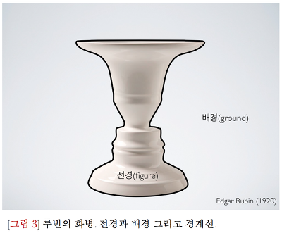

전편과 이어집니다.
전편에 이어서, 인간의 움직임과 행위들은 모두 게슈탈트라고 할 수 있습니다. 우리가 게슈탈트를 형성하는 이유는
욕구나 감정뿐 아니라 자신의 동작을 하나의 유의미한 행동으로 만들고 시행하고 완료하고 싶기 때문입니다.
사람의 욕구나 감정, 움직임 자체가 게슈탈트가 아니라, 자신이 처한 환경과 상황을 고려하여 그 맥락에서 실현 가능한
행동동기를 지각한 것이 게슈탈트 입니다.
<전경과 배경>
우리는 무언가를 바라볼 때 주의력을 둔 대상은 지각의 중심에 두고 나머지 부분들은 모두 배경으로 처리합니다.
사진 기술 중 아웃포커싱 처럼 구도에 담으려고 하는 피사체만 선명하게 찍고, 나머지 배경들은 흐릿하게 찍는 것 처럼
어스 순간에 관심의 초점이 되는 것을 전경figure이라고 하고 뒤에 관심 밖의 것들을 배경ground 라고 합니다.

위 사진의 루빈 꽃병은 전경과 배경을 식별함으로써 이미지를 다르게 만들어 냅니다. 꽃병에 윤곽의 소유권을
주면 꽃병이 보이고, 얼굴에 윤곽선을 할당하면 얼굴이 보입니다.
심리적으로 건강한 사람들은 매 순간 자신에게 중요한 게슈탈트를 강하게 만들 수 있지만, 그렇지 않은
사람들은 자신의 심리 속에서 전경과 배경을 명확하게 구분하지 못합니다.
게슈탈트 심리학에서의 해석은 자신이 진정으로 하고 싶은 일이 무엇인지 잘 모르며 행동목표가 불분명하고 의사결정에
어려움을 겪는 것이라고 합니다.
전경으로 떠올랐던 게슈탈트가 해결되면 배경으로 물러나고, 새로운 전경이 떠오르고를 반복합니다.
배경에는 다양한 경험들이 녹아있는 바탕이 됩니다. 계속해서 업데이트 되는 전경과 배경입니다.
이 대목에서 전경과 배경은 인간의 움직임 조절 기전과 유사하다고 느껴지지 않으신가요 ?
움직임을 수행하는 우리의 몸 자체가 게슈탈트라고 바라볼 수 있습니다. 냉장고에서 물을 꺼내 마실 때 쓰는 목과 물잔을
든 손은 전경이 되고 나머지 몸 부위들은 배경이라고 볼 수 있습니다.
게슈탈트 심리학에서 배경은 건강한 심리적 경험들이 모인 장입니다. 움직임에서도 마찬가지로 건강한 배경들이 필요합니다.
어떤 욕구를 성공적으로 성취하는데 사용된 움직임 경험들이 많을수록 우리는 더 쉽게 어떤 움직임을 시도할 수 있습니다.
또한, 전경과 배경은 명확하게 분리되어 있으면서, 한편으로는 상호교환 됩니다. 그리고 끊임없이 전경이 되고 배경이 되는 순환 과정을
거칩니다. 이것을 '게슈탈트 형성과 해소의 순환'이라고 합니다.
다음편에서 계속